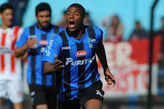

Meu primeiro site
AQUI VOCE VERÁ MAIS SOBRE NICO-DE-LA-CRUZ
Liverpool Montevidéu De la Cruz foi formado pelo clube uruguaio homônimo de Liverpool. Em 13 de setembro de 2015, em uma partida contra El Tanque Sisley, ele fez sua estreia na Primeira Divisão uruguaia. Em 15 de maio de 2016, em uma partida contra o Rentistas, Nicolas marcou seu primeiro gol pelo Liverpool
Na seleção uruguaia, De La Cruz é considerado um dos principais talentos emergentes. Ele fez sua estreia em 2017 e tem participado de competições importantes, como as Eliminatórias para a Copa do Mundo e a Copa América. Sua capacidade de driblar, criar jogadas e marcar gols o torna um jogador importante no esquema de jogo da Celeste.
CONFIRA OS MELHORES MOMENTOS DE DE-LA-CRUZ